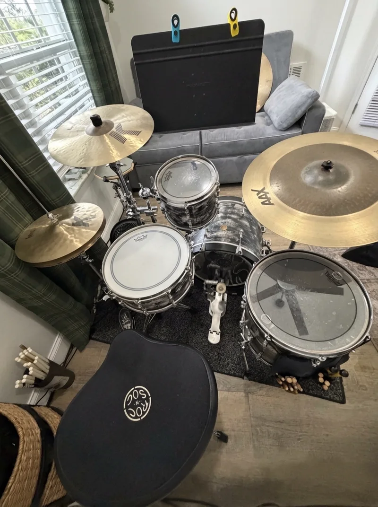

Drum Lessons in Palm Beach Gardens, FL
Looking for drum lessons in Palm Beach Gardens, FL? Paul Charron teaches one student at a time at his studio in Loxahatchee, about 12 miles by road from the center of Palm Beach Gardens.
- Teaching since 2008
- Rated 5.0 on Google
- All ages
Rated 5.0 on Google. Read the reviews.

Getting to drum lessons from Palm Beach Gardens
From Palm Beach Gardens the studio is to the west and a little south. Northlake Boulevard carries most of the trip, about 6 miles heading west, before the route turns south on Coconut Boulevard and west on Orange Boulevard into The Acreage.
NEEDS CLIENT: does Paul teach students from Palm Beach Gardens today, and does he ever travel to Palm Beach Gardens to teach? This page only says what is measured.
- Studio: 6449 143rd Dr N, Loxahatchee, FL 33470, in The Acreage.
- By road: about 12.2 miles from the center of Palm Beach Gardens.
- Straight line: 8.7 miles. This is a distance, not a drive time.
- Main roads: Northlake Boulevard, Coconut Boulevard, Orange Boulevard.
- Lesson hours: Monday to Friday 9 AM to 8 PM, Saturday 9 AM to 1 PM.
What Palm Beach Gardens students get at the studio
Every lesson is private. There are two full acoustic kits in the room, a Yamaha and a Gretsch, so you play on one of Paul's. NEEDS CLIENT: what should a new student bring (sticks, a book)?
Paul has been teaching since 2008 and has taught drummers from 2 to 82 years old, from first lesson to advanced. The full picture of how lessons work is on the main drum lessons in Loxahatchee page.
NEEDS CLIENT: lesson length and price, so a Palm Beach Gardens family can weigh the drive.
"We are so grateful we found Paul. He has far exceeded our expectations in a drum instructor for our teenage son. ... Our son comes home excited to practice after an hour with Paul."
Questions about drum lessons in Palm Beach Gardens
Are the drum lessons held in Palm Beach Gardens?
No. Lessons are at Paul's studio in Loxahatchee, about 12.2 miles by road from the center of Palm Beach Gardens. NEEDS CLIENT: say here if Paul also teaches in students' homes.
When can students from Palm Beach Gardens take drum lessons?
Monday to Friday from 9 AM to 8 PM, and Saturday from 9 AM to 1 PM. The studio is closed on Sunday.
Can Palm Beach Gardens students take drum lessons online instead?
Paul plans to add online lessons. See the online drum lessons page for where that stands.
Book a drum lesson from Palm Beach Gardens
Tell Paul who the lesson is for and he will call you back to set a time.
Or call (561) 350-1434.